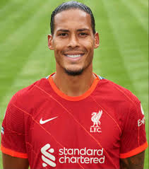

Virgil Van Dijk
His life
Date of birth:
08.07.1991
Country:
Netherlands
His Career
2011–2013
Groningen
2013–2015
Celtic
2015–2018
Southampton
2018-now
Liverpool
His Career goals asists and Games
Groningen
62(games) 7(goals)
Celtik
76(games) 9(goals)
Southampton
67(games) 4(goals)
Liverpool
129 (games) 13(goals)
Trophies with clubs
Club world cup (Liverpool)
Champions League (Liverpool)
Primer League (Liverpool)
UEFA Super cup (Liverpool)
FA cup (Liverpool)
League cup (Liverpool)
Scottish champion (Celtic)
Scottish league cup winner (Celtic)
His own Trophies
UEFA best player in Europe🏆
Player of the year in Liverpool🏆
TM-player of the season🏆